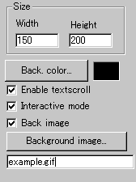
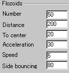
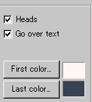

|
This applet visualises a famous A-Life algorithm
called "flozoids", which are moving particles all over
the applet area.
[For more technical
information about the available parameters, click here.]
Most parameters are self-explanatory and you can
always see brief description of each parameter by moving the mouse
pointer over the wizard.
 |
First of all, define the applet size in "Width"
and "Height" boxes on top of the left image.
Next, choose a background colour or background image.
Then decide whether to enable textscroll over
the applet image or not. If you check "Enable textscroll"
box, textscroll menu will appear
after you finish this applet specific menu.
|
|
Read the wizard tutorial
for more information about the basic
procedure.
There is an interesting feature, "Interactive
mode". If you enable this feature, you can control
the movement of flozoids by mouse pointer.
|
 |
You now define flozoids parameters.
Fist set the number of flozoid particles and the maximum distance
between flozoids at "Number" and "Distance"
boxes respectively. Then, define how fluently flozoids converge
to the centre of the applet area with "To centre".
|
| Next, determine the
values for acceleration and maximum velocity of flozoids at
"Acceleration" and "Speed"
boxes. Another parameter, "Side bouncing" decides
how powerfully flozoids collide with the applet edges and bounce
back from them. |
 |
Now, you determine style of flozoids. There are two types
of them: flozoids with or without heads. Check "heads"
box, if you would like flozoids with heads.
Then select the gradient colour painted over the whole flozoids
at "First colour" and "Last colour".
|
The final parameter is "Go over text".
If you would like to see scrolling text over flozoids, do not check
this box; otherwise you will see flozoids moving around even over
the text by checking this box.
Proceed to the textscroll
menu if you have checked the textscroll box; otherwise go to
the expert menu.
|